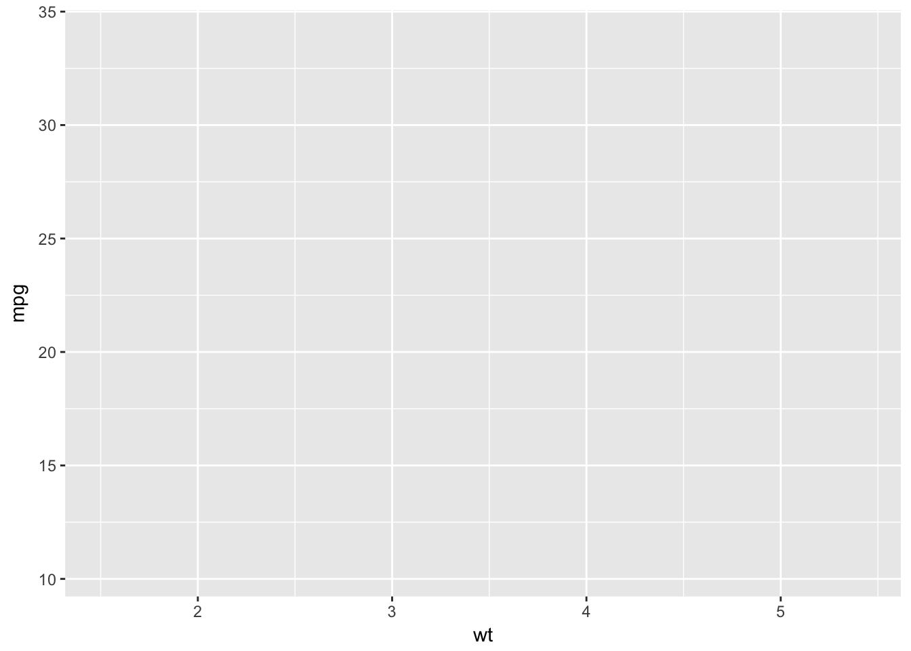
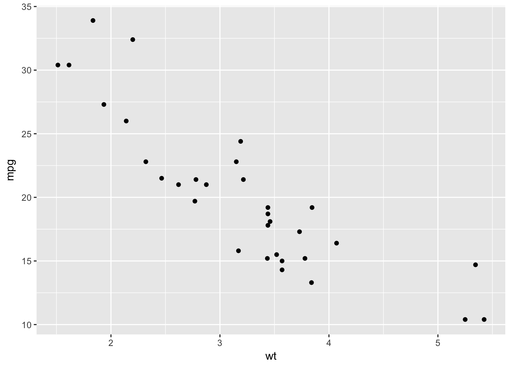
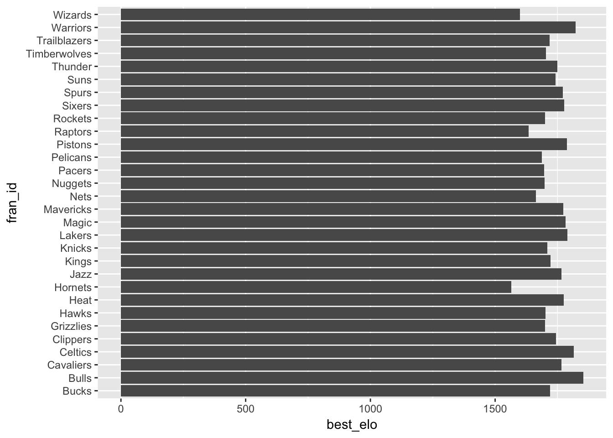
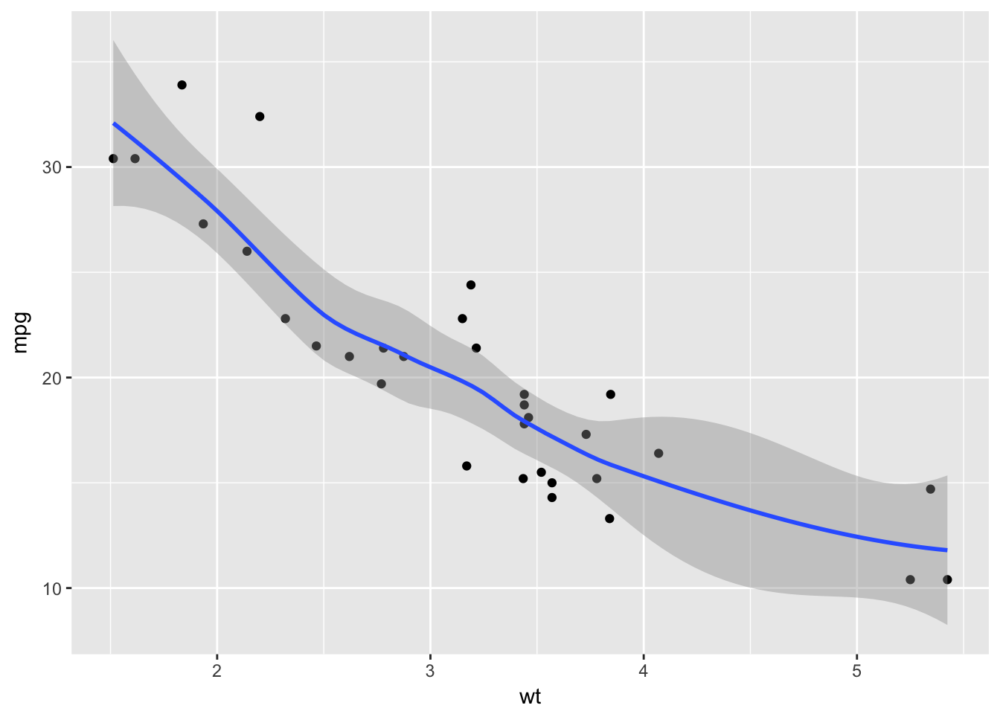
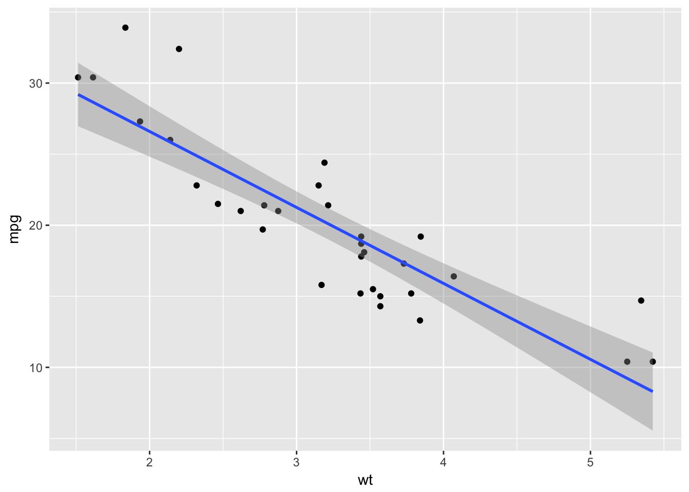

6 Stats
R is built to do stats. For my money, it’s the best data analysis tool there is. But users commonly make mistakes doing statistics in R. Here are some and how to avoid them.
6.0.1 Don’t regress when regressing
Regression analysis is a staple method in data science. In R, you’ll often use the workhorse lm() function for doing linear regression and glm() for logistic regression and more advanced techniques.
Let’s load the nba_elo_data.csv data again and run a regressions on a team’s Elo rating at the start of a game (elo_i) against its point margin (which we’ll create by subtracting pts from opp_pts, using the mutate() function).
library(tidyverse)
# Load data
nba_elo_data <- read_csv("https://raw.githubusercontent.com/fivethirtyeight/data/master/nba-elo/nbaallelo.csv")# Add new column, pts_margin, using the mutate() function
new_elo_data <- nba_elo_data %>%
mutate(pts_margin = pts - opp_pts)
lm(data = new_elo_data, formula = pts_margin ~ elo_i)##
## Call:
## lm(formula = pts_margin ~ elo_i, data = new_elo_data)
##
## Coefficients:
## (Intercept) elo_i
## -46.91730 0.03138Not surprising: an NBA team’s pre-game Elo rating is positively associated with its margin of victory.
But the output, elo_regression, is hard to read, And it masks more detailed output from the regression. We’ll assign the lm() output (which is a model object) to the variable named elo_regression. Using the customary summary() function on the model object reveals more details – but it’s still hard to decipher.
elo_regression <- lm(data = new_elo_data, formula = pts_margin ~ elo_i)
# Printing the raw model output
elo_regression##
## Call:
## lm(formula = pts_margin ~ elo_i, data = new_elo_data)
##
## Coefficients:
## (Intercept) elo_i
## -46.91730 0.03138# Printing the detailed model output
summary(elo_regression)##
## Call:
## lm(formula = pts_margin ~ elo_i, data = new_elo_data)
##
## Residuals:
## Min 1Q Median 3Q Max
## -67.818 -8.544 0.032 8.523 67.526
##
## Coefficients:
## Estimate Std. Error t value Pr(>|t|)
## (Intercept) -4.692e+01 4.855e-01 -96.65 <2e-16 ***
## elo_i 3.138e-02 3.238e-04 96.92 <2e-16 ***
## ---
## Signif. codes: 0 '***' 0.001 '**' 0.01 '*' 0.05 '.' 0.1 ' ' 1
##
## Residual standard error: 12.9 on 126312 degrees of freedom
## Multiple R-squared: 0.06922, Adjusted R-squared: 0.06921
## F-statistic: 9393 on 1 and 126312 DF, p-value: < 2.2e-16Now let’s actually use the regression output. A common beginner mistake is to make predictions from a regression by directly accessing the model coefficients and then manually calculating the estimator (or “y-hat”).
# Print regression coeficients
coef(elo_regression)## (Intercept) elo_i
## -46.91730071 0.03137786# BAD -- manually making a prediction
example_team_elo <- 1500
coef(elo_regression)[1] + (coef(elo_regression)[2] * example_team_elo)## (Intercept)
## 0.1494824This is a big no-no. It’s far more simple – and less error-prone – to use the predict() function instead. Under this workflow, you’d provide predict() with two necessary inputs: (1) the model object you’ve generated from lm() and (2) a dataframe of new data to make predictions on (with the paramaeter name newdata). Here’s a better way to make a prediction on the point margin of an NBA team with a 1500 Elo rating.
# Create data frame to use for predictions
new_data <- data.frame(elo_i = 1500)
# GOOD -- using the predict() function
predict(elo_regression, newdata = new_data)## 1
## 0.14948246.0.2 Use broom to tidy your model outputs
There is an even better workflow for working with the output of R regression models, especially when you’re creating a lot of them at once. The wonderful package broom, by David Robinson, is here to save you. What broom does is simple but powerful: It stores model output data in a standardized data frame.
What if you want to extract the p-value from your regression? When using summary() on a model object, what’s returned is OK enough to read, but a terrible format to use. The broom package has a useful function, tidy(), which nicely organizes the terms of your regression, their estiamtes and standard errors, test statistics and p-values – all in one place.
library(broom)
tidy(elo_regression)## term estimate std.error statistic p.value
## 1 (Intercept) -46.91730071 0.4854565302 -96.64573 0
## 2 elo_i 0.03137786 0.0003237596 96.91715 0This is especially useful if you’re testing a lot of regression models. Let’s group each NBA franchise (using fran_id) and run a regression the same regression as before.
To do this for each franchise, we’ll use the helpful do() function. First, though, we’ll run the regression using lm() and store the regression outputs in a dataframe using tidy(). What results is a clean dataframe for all 53 franchises in NBA history. One clarifying note: the . used to specify the dataset for lm() to use refers to the dataframe being piped (%>%) to it, or new_elo_data.
new_elo_data %>%
group_by(fran_id) %>%
do(tidy(lm(formula = pts_margin ~ elo_i, data = .)))## Source: local data frame [106 x 6]
## Groups: fran_id [53]
##
## fran_id term estimate std.error statistic
## <chr> <chr> <dbl> <dbl> <dbl>
## 1 Baltimore (Intercept) -63.58332224 13.161953246 -4.8308424
## 2 Baltimore elo_i 0.04307166 0.009449932 4.5578808
## 3 Bombers (Intercept) 59.43686404 26.951049832 2.2053636
## 4 Bombers elo_i -0.04325854 0.019260027 -2.2460271
## 5 Bucks (Intercept) -53.85436245 2.926199735 -18.4041991
## 6 Bucks elo_i 0.03618180 0.001929639 18.7505475
## 7 Bulls (Intercept) -51.98972815 2.306071267 -22.5447188
## 8 Bulls elo_i 0.03482617 0.001515665 22.9774815
## 9 Capitols (Intercept) 21.71334358 25.122186049 0.8643095
## 10 Capitols elo_i -0.01347413 0.017132549 -0.7864641
## # ... with 96 more rows, and 1 more variables: p.value <dbl>6.0.3 Logitstic troubles
Logistic regressions are another source of R frustration. A beginner mistake is to think you can just use lm(). You can’t.
Let’s try to run a logistic regression on how an NBA team’s pre-game Elo rating predicts the likehlihood they’ll win the game (game_result). It’s going to fail, though, because we’re using lm().
lm(data=new_elo_data, formula = game_result ~ elo_i)## Warning in model.response(mf, "numeric"): NAs introduced by coercion## Error in lm.fit(x, y, offset = offset, singular.ok = singular.ok, ...): NA/NaN/Inf in 'y'Maybe R’s most powerful function is glm(), which stands for generalized linear model. And it’s this you’ll need for a logistic regression. Also requried is that you specifcy the family parameter within the glm() function. A common setting for logistic regression is “binmoial,” as logistic is measuring outcomes like TRUE/FALSE, Democratc/Republican, Win/Loss.
But your data must be properly formatted first. Notice how this otherwise correct specfication fails. (Hint: it’s because game_result is currently a character vector with “W” or “L”.)
glm(data=new_elo_data, formula = game_result ~ elo_i, family = "binomial")## Error in eval(expr, envir, enclos): y values must be 0 <= y <= 1Let’s change that to be 1s and 0s, and then re-run the regression.
library(tidyverse)
elo_data_logit <- new_elo_data %>%
mutate(game_result_logit = ifelse(game_result == "W", 1, 0))
glm(data=elo_data_logit, formula = game_result_logit ~ elo_i, family = "binomial")##
## Call: glm(formula = game_result_logit ~ elo_i, family = "binomial",
## data = elo_data_logit)
##
## Coefficients:
## (Intercept) elo_i
## -6.547575 0.004378
##
## Degrees of Freedom: 126313 Total (i.e. Null); 126312 Residual
## Null Deviance: 175100
## Residual Deviance: 168000 AIC: 168100Hooray! It worked.
6.0.4 ggplot2 screwups
Hadley Wickham’s ggplot2 is a gem. The pacakge allows R coders to create elegant graphics through an approach that utilizes a “grammar of graphics.” I won’t cover all the intricacies of ggplot2 here, but I’ll touch on some common mistakes I’ve made.
Perhaps the most common ggplot2 mistake is forgetting where to place the + symbol that “chains” together ggplot commands (often called “layers”). (Hadley Wickham cites this as a common mistake in his fantastic book R for Data Science.) The error occurs because the + symbol should be placed at the end of the line of code.
library(ggplot2)
# Incorrect
ggplot(data = mtcars, aes(x = wt, y = mpg))
+ geom_point()## Error in +geom_point(): invalid argument to unary operator# Correct
ggplot(data = mtcars, aes(x = wt, y = mpg)) +
geom_point()
Beyond that silly mistake, I’ve made plenty of other ones in ggplot2. A common one involves the geom_bar() layer for making bar plots.
Here we’re going to create a dataframe of each NBA franchise’s peak Elo rating (similar to what we did in chapter 3). We’ll then use this dataframe, fran_max_elo, to make a simple bar chart. (For clarity, we’ll flip the x and y coordinates of the chart with the coord_flip() function.) All this will be chained together with the + symbol and, finally, plotted with geom_bar(). But, by default, it won’t work.
fran_max_elo <- nba_elo_data %>%
filter(year_id >= 1980) %>%
group_by(fran_id) %>%
summarize(best_elo = max(elo_n)) %>%
arrange(desc(best_elo))
ggplot(data = fran_max_elo, aes(x = fran_id, y = best_elo)) +
coord_flip() +
geom_bar()## Error: stat_count() must not be used with a y aesthetic.
The missing ingredient here is changing the stat paramaeter of the geom_bar() layer to be set to “identity”. This insures that the bars are not counting, or aggregating, the variable supplied for y – but instead are interpreting it literally.
ggplot(data = fran_max_elo, aes(x = fran_id, y=best_elo)) +
coord_flip() +
geom_bar(stat="identity")
Another common mistake is to trust ggplot2 default settings when using the geom_smooth() or stat_smooth() functions. Without any additional specification, it will layer on your graphic a Loess curve. To instead get a linear line of best fit, you must specify with method="lm".
Also, notice in the code below I stop specifying the data parameter in the ggplot base layer. Instead, per my style suggestions in chapter 3, I use the %>% operator. You’ll also pick up the interchanging symbols, placed at the end of the code line.
library(tidyverse)
# Loess curve by default
mtcars %>%
ggplot(aes(x = wt, y = mpg)) +
geom_point() +
geom_smooth()## `geom_smooth()` using method = 'loess'
# Linear smoothing
mtcars %>%
ggplot(aes(x = wt, y = mpg)) +
geom_point() +
geom_smooth(method="lm")